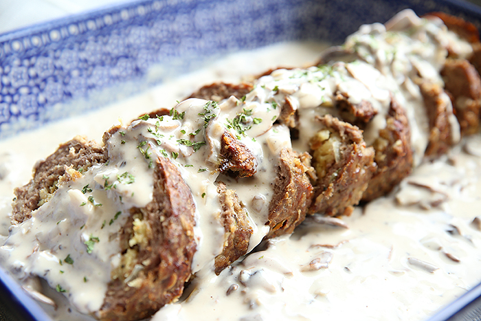

Mushroom Meatloaf with Mushroom Sauce

Description
Try this Mushroom Meatloaf! You will not regret it.
This is another pick from my husband.
Ingredients
Mushroom Meatloaf
- 1 pound mushrooms, button, finely chopped
- 1 pound ground meat (turkey, chicken, pork
or beef)
- 1 teaspoon minced fresh thyme
- 1 tablespoon minced fresh Italian parsley
- 1 tablespoon Worcestershire sauce
- 1 teaspoon onion powder
- 1 tablespoon fresh garlic, minced fine
- 1 cup fresh bread crumbs
- 1/2 cup whole milk
- 2 eggs, lightly beaten
- 2 teaspoons kosher salt
- 1/2 teaspoon black pepper
Mushroom Sauce
- 1/4 cup milk
- 2 tablespoons cornstarch
- 3 tablespoons flour
- 3 tablespoons unsalted butter
- 1/2 cup beef stock
- 1.5 pounds crimini mushrooms, sliced
- 1/3 cup onion, diced
- 2 teaspoons Worcestershire sauce
Instructions
Meatloaf
- Preheat oven to 350 degrees.
- In a large bowl, add the meat, mushroom and
remaining 10 ingredients. Mix until well
combined.
- Place mixture into 7 x 5 inch loaf baking pan
or shape into free form loaf and place on a
parchment lined sheet pan. Place into preheated
oven and bake for 45 minutes.
Mushroom Sauce
- In a small bowl, combine milk and cornstarch;
set aside.
- In a large skillet, melt butter over high heat.
Add the mushrooms and onions; cook and stir
over moderate heat until the mushrooms are
golden, about 10 minutes.
- Add the flour and stir to coat, cook for 5
minutes. Stir in beef broth and bring to a
simmer and add Worcestershire sauce.
- Cook over high heat, stirring constantly,
until slightly thickened, about 1 minute.
- Taste for seasoning and adjust to taste with
salt and pepper.